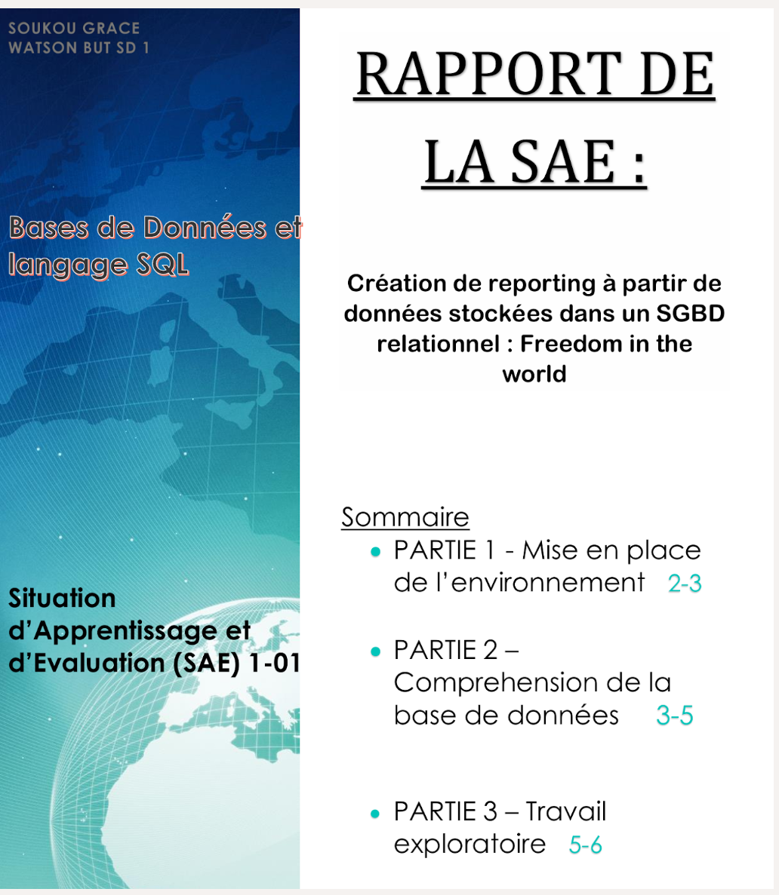
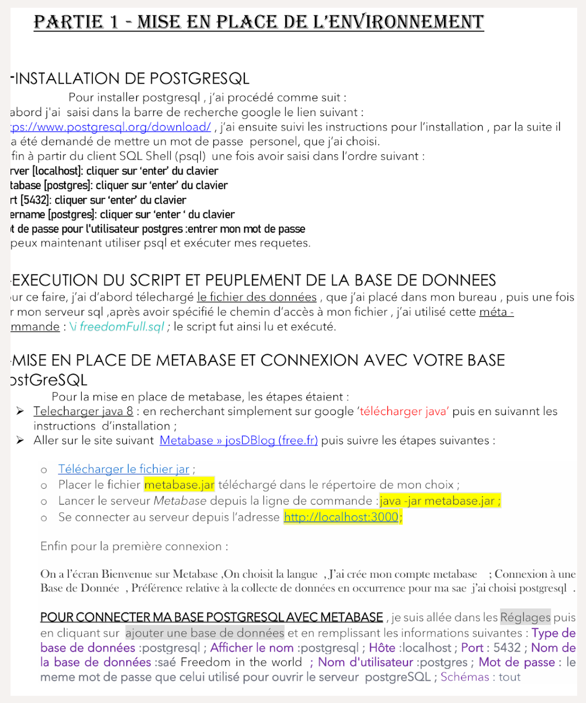
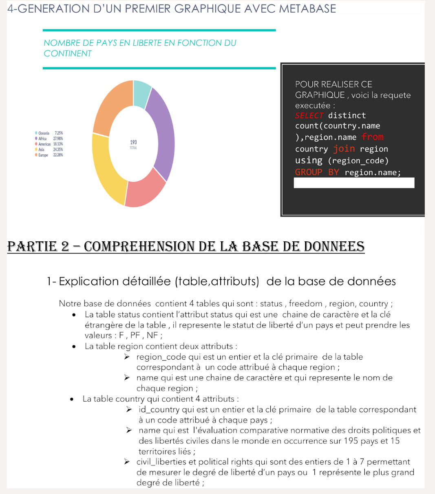
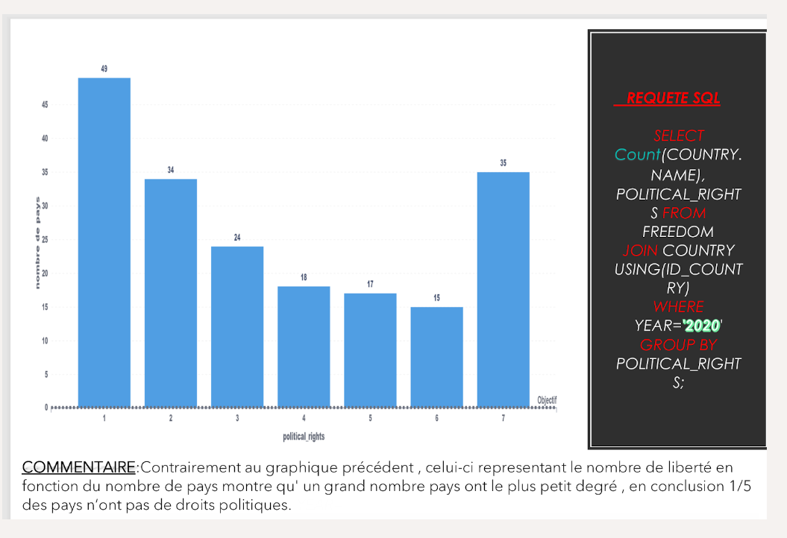
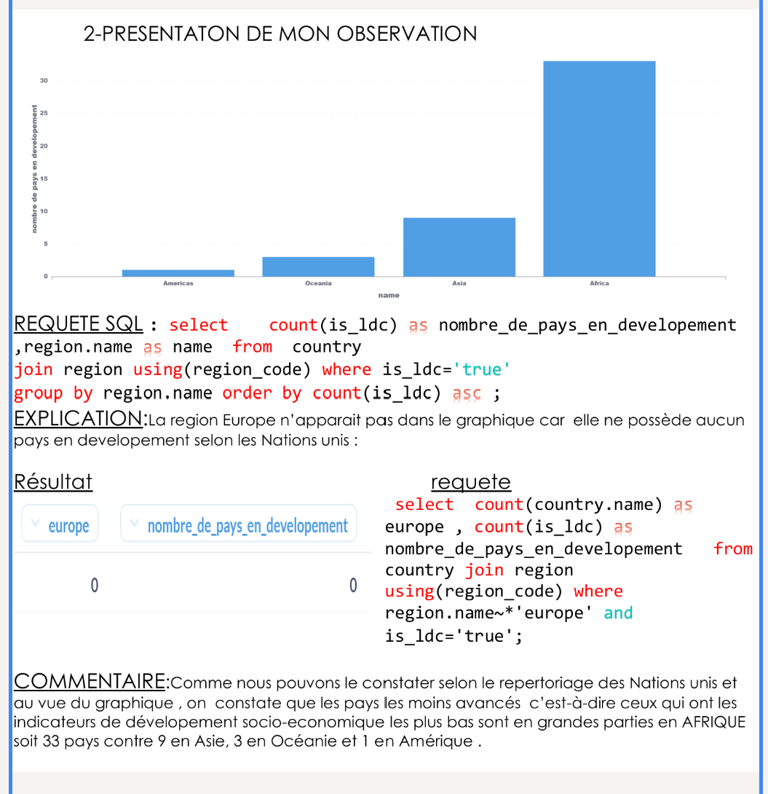
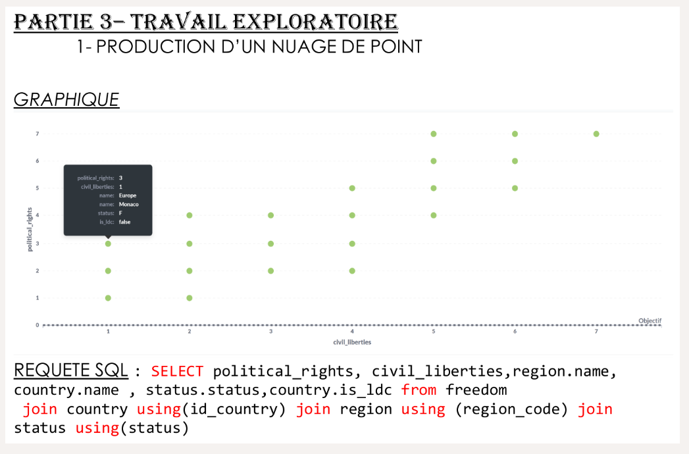

<!DOCTYPE html>
<html lang="fr">
<head>
  <meta charset="UTF-8" />
  <meta name="viewport" content="width=device-width, initial-scale=1.0"/>
  <title>Projets – BUT 1</title>
  <link rel="stylesheet" href="https://cdn.jsdelivr.net/npm/bootstrap@5.3.0/dist/css/bootstrap.min.css">
  <link rel="stylesheet" href="style-projets.css">
</head>
<body class="but3-page">  
  <header class="text-center py-4 bg-gradient-top">
    <h1 class="fw-bold">📚 Projets de la deuxième année</h1>
    <div class="d-flex justify-content-center gap-3 mt-3">
      <a href="index.html" class="btn btn-outline-light">← Accueil</a>
      <a href="page1.html" class="btn btn-outline-light">↩ BUT 1</a>
      <a href="page3.html" class="btn btn-outline-light">↩ BUT 3</a>
    </div>
  </header>
  
<main class="container py-5">
<!-- Section SAE Analyse des pratiques musicales -->
<section class="container my-5 sae-bloc-1">
  <div class="row g-5 p-4 rounded shadow-lg" 
       style="background: linear-gradient(120deg, #e3f2fd 30%, #fce4ec 70%); display: flex; flex-wrap: wrap; align-items: start; justify-content: space-between;">

    <!-- Colonne texte élargie -->
    <div class="col-lg-7" style="flex: 1 1 60%;">
      <h2 class="fw-bold">🎧 SAE – Analyse des pratiques d’écoute musicale</h2>

<h4>📝 Contexte de la SAE</h4>
<p>Cette SAE a été l’une des plus importantes en termes de volume horaire, notamment pour le travail en autonomie. C'était la toute première saé de ma formation. Elle portait sur les pratiques d’écoute musicale et nous a permis de mobiliser simultanément plusieurs compétences : statistiques descriptives, datavisualisation, informatique (Python) et communication.</p>

<h4>📌 Niveau au préalable (les prérequis)</h4>
<p>Avant cette SAE, mes connaissances en Python étaient assez limitées (notions de base seulement). En revanche, je ne maîtrisais aucun outil bureautique, ce qui était pourtant indispensable pour la conduite de ce projet.</p>

<h4>💡 Éléments déclencheurs (comment j’ai évolué ?)</h4>
<p>Au cours du projet, j’ai constaté un manque d’investissement de certains membres de mon groupe. Ce déclic m’a poussée à prendre l’initiative et le rôle de leader pour coordonner nos travaux et garantir l’avancement du projet. Cela a marqué un vrai tournant dans mon implication personnelle et dans la dynamique d’équipe.</p>

<h4>✅ Compétences mobilisées</h4>
<ul>
  <li>Analyse de données : traitement et exploration de 1024 réponses via Sphinx et Excel.</li>
  <li>Statistiques : calcul d’indicateurs pertinents, recherche de corrélations.</li>
  <li>Datavisualisation : création de graphiques percutants et accessibles.</li>
  <li>Programmation Python : élaboration d’un programme pour lire et filtrer efficacement les données.</li>
  <li>Communication : préparation d’une soutenance orale en amphithéâtre, restitution claire des résultats.</li>
  <li>Leadership et organisation : gestion d’un groupe peu collaboratif, répartition des tâches.</li>
</ul>

<h4>🧠 Prises de conscience</h4>
<ul>
  <li>Travailler avec un grand volume de données nécessite rigueur, logique et méthode.</li>
  <li>La datavisualisation est un levier essentiel pour rendre l’analyse accessible à tous.</li>
  <li>L’implication personnelle peut compenser les faiblesses d’un groupe et redonner de l’élan à un projet collectif.</li>
</ul>

<h4>📈 Bonnes pratiques acquises</h4>
<ul>
  <li>Savoir concevoir un questionnaire efficace et exploitable.</li>
  <li>Utilisation combinée d’outils (Sphinx, Excel, Python) pour produire une analyse complète.</li>
  <li>Développement de ma posture de leader, capacité à motiver et organiser un groupe.</li>
  <li>Approche transversale : mise en lien de plusieurs disciplines (info, stats, com') dans un seul projet.</li>
</ul>

<h4>⚠️ Points de vigilance</h4>
<ul>
  <li>Difficile au départ de répartir équitablement les responsabilités dans un groupe déséquilibré.</li>
  <li>Certaines tâches manquaient d’automatisation, notamment dans le traitement des données sous Excel.</li>
  <li>Encore à l’aise sur peu de logiciels, ce qui a ralenti certaines étapes au début.</li>
</ul>

<h4>🚧 Work in progress – Progrès à accomplir</h4>
<ul>
  <li>M’améliorer en data cleaning automatisé (nettoyage rapide de données).</li>
  <li>Me former davantage aux outils de datavisualisation interactifs.</li>
  <li>Renforcer mes compétences en gestion de projet collaboratif : motiver, répartir, coordonner.</li>
  <li>Approfondir ma maîtrise des outils bureautiques (Excel, PowerPoint, etc.).</li>
</ul>

<h4>🎯 Conclusion</h4>
<p>Cette SAE a été une expérience riche et déterminante. Elle m’a permis de développer mes compétences techniques, de me révéler dans un rôle de leader, et de comprendre à quel point la science des données m’intéresse. Elle a renforcé mon intérêt pour ce domaine, et m’a permis de conjuguer théorie et pratique pour relever un vrai défi collectif.</p>

    </div>
<div class="fond-emoji-anime">
  <!-- Emojis dispersés -->
  <div class="emoji-flottant" style="left: 5%;">🎧</div>
  <div class="emoji-flottant" style="left: 15%;">📊</div>
  <div class="emoji-flottant" style="left: 25%;">🎶</div>
  <div class="emoji-flottant" style="left: 35%;">📈</div>
  <div class="emoji-flottant" style="left: 45%;">🔍</div>
  <div class="emoji-flottant" style="left: 55%;">💡</div>
  <div class="emoji-flottant" style="left: 65%;">🎼</div>
  <div class="emoji-flottant" style="left: 75%;">🧠</div>
  <div class="emoji-flottant" style="left: 85%;">📋</div>
</div>

    <!-- Colonne évaluation + image -->
    <div class="col-lg-5" style="flex: 1 1 35%;">
      <h4 class="fw-bold mb-4">📊 Évaluation des compétences</h4>

      <div class="mb-3">
        <label class="form-label">🧮 Traiter les données</label>
        <div class="progress mb-1"><div class="progress-bar bg-info" style="width: 90%">4.5 / 5</div></div>
        <small class="text-muted">Très forte implication dans le nettoyage et la structuration des données.</small>
      </div>

      <div class="mb-3">
        <label class="form-label">🔍 Analyser les données</label>
        <div class="progress mb-1"><div class="progress-bar bg-success" style="width: 80%">4 / 5</div></div>
        <small class="text-muted">Bonne capacité à détecter des tendances et interpréter les résultats.</small>
      </div>

      <div class="mb-3">
        <label class="form-label">📢 Valoriser les données</label>
        <div class="progress mb-1"><div class="progress-bar bg-warning" style="width: 70%">3.5 / 5</div></div>
        <small class="text-muted">Présentation visuelle et orale réussie mais à renforcer.</small>
      </div>

      <div class="mb-4">
        <label class="form-label">🧠 Modéliser les données</label>
        <div class="progress mb-1"><div class="progress-bar bg-danger" style="width: 60%">3 / 5</div></div>
        <small class="text-muted">Utilisation de Python encourageante, mais modélisation encore en apprentissage.</small>
      </div>

     


    </div>
  </div>
</section>


    <!-- Projet 2 : Reporting SQL -->
    <section class="project-block sae-background position-relative sae-bloc-2">
  <div class="fond-emoji-anime">
    <div class="emoji-flottant" style="left: 10%;">📈</div>
    <div class="emoji-flottant" style="left: 20%;">📊</div>
    <div class="emoji-flottant" style="left: 30%;">🧩</div>
    <div class="emoji-flottant" style="left: 40%;">🗂️</div>
    <div class="emoji-flottant" style="left: 50%;">🧠</div>
    <div class="emoji-flottant" style="left: 60%;">📋</div>
    <div class="emoji-flottant" style="left: 70%;">🌍</div>
  </div>

  <h2>🗃️ SAE – Création de reporting à partir de données stockées dans un SGBD relationnel</h2>

  <h5>📝 Contexte de la SAE</h5>
  <p>Cette SAE, réalisée individuellement sur environ trois semaines au premier semestre, s’inscrit dans la compétence "Traiter des données à des fins décisionnelles". Elle consistait à créer des rapports détaillés à partir d’une base de données relationnelle, à l’aide d’outils professionnels tels que PostgreSQL et Metabase, en construisant des tableaux de bord interactifs reposant sur des requêtes SQL.</p>

  <h5>📌 Niveau au préalable</h5>
  <p>Avant cette SAE, j’avais déjà des bases solides en SQL grâce à ma formation précédente en classe préparatoire. Cependant, je découvrais l’outil Metabase et l’aspect décisionnel de l’exploitation de données en entreprise.</p>

  <h5>💡 Éléments déclencheurs</h5>
  <p>Le contenu même de la base de données – centré sur le thème de la liberté selon les Nations Unies – a été un véritable élément déclencheur. Comprendre la portée humaine et sociale derrière chaque donnée m’a permis de voir au-delà de la technique et d’exécuter mes requêtes avec plus de sens et de sensibilité.</p>

  <h5>✅ Compétences mobilisées</h5>
  <ul>
    <li>Langage SQL avancé : extraction, jointures complexes, conditions multiples</li>
    <li>Structuration des données : cohérence, lisibilité, préparation des rapports</li>
    <li>Visualisation : création de dashboards dynamiques avec Metabase</li>
    <li>Sens critique sur les données : lecture éthique et interprétation des résultats</li>
    <li>Travail individuel : gestion complète du projet de bout en bout</li>
  </ul>

  <h5>🧠 Prises de conscience</h5>
  <ul>
    <li>La qualité de la requête SQL impacte directement la clarté du message transmis</li>
    <li>Les données ne sont jamais neutres : elles portent des histoires, des enjeux humains, et méritent une interprétation éthique</li>
    <li>L’usage de visualisations efficaces est essentiel pour rendre les résultats compréhensibles et impactants</li>
  </ul>

  <h5>📈 Bonnes pratiques acquises</h5>
  <ul>
    <li>Structurer mes requêtes pour une réutilisabilité optimale</li>
    <li>Savoir combiner analyse quantitative et narration visuelle</li>
    <li>Réaliser un projet décisionnel complet, de la donnée brute au tableau de bord</li>
    <li>Aller au-delà de l’aspect technique pour valoriser le sens derrière les chiffres</li>
  </ul>

  <h5>⚠️ Points de vigilance</h5>
  <ul>
    <li>Difficultés initiales avec Metabase : temps d’adaptation nécessaire à l’interface</li>
    <li>Certaines visualisations méritaient d’être plus intuitives : importance de penser à l’utilisateur final</li>
  </ul>

  <h5>🚧 Work in progress – Progrès à accomplir</h5>
  <ul>
    <li>Approfondir mes compétences en visualisation décisionnelle avancée (graphiques composites, indicateurs dynamiques)</li>
    <li>Explorer des solutions alternatives à Metabase (comme Power BI, Tableau)</li>
    <li>Renforcer mes compétences en modélisation des données pour optimiser les bases en amont</li>
  </ul>

  <h5>🎯 Conclusion</h5>
  <p>Cette SAE a été bien plus qu’un projet technique : elle a été pour moi une immersion dans la narration par les données. Elle a renforcé ma maîtrise de SQL, m’a initiée à la business intelligence, et surtout, elle m’a permis de prendre conscience de l’impact humain et symbolique que peuvent porter les chiffres. C’est une SAE qui m’a confortée dans mon envie de travailler dans le domaine de la data analyse avec une vision engagée et éclairée.</p>

  <hr>

  <h4 class="fw-bold mt-5">📊 Évaluation des compétences</h4>
  <div class="mb-3">
    <label>🧮 Traiter les données</label>
    <div class="progress"><div class="progress-bar bg-info" style="width: 90%">4.5 / 5</div></div>
    <p class="text-muted">Maîtrise avancée des requêtes SQL et nettoyage de données</p>
  </div>
  <div class="mb-3">
    <label>🔍 Analyser les données</label>
    <div class="progress"><div class="progress-bar bg-success" style="width: 85%">4.25 / 5</div></div>
    <p class="text-muted">Bonne capacité à tirer des enseignements pertinents</p>
  </div>
  <div class="mb-3">
    <label>📢 Valoriser les données</label>
    <div class="progress"><div class="progress-bar bg-warning" style="width: 75%">3.75 / 5</div></div>
    <p class="text-muted">Visualisations utiles mais marge de progression sur la narration</p>
  </div>
  <div class="mb-3">
    <label>🧠 Modéliser les données</label>
    <div class="progress"><div class="progress-bar bg-danger" style="width: 65%">3.25 / 5</div></div>
    <p class="text-muted">Premiers pas dans la modélisation avec Metabase</p>
  </div>

  <hr class="my-5">

  <!-- Images illustratives -->
  <div class="row g-4 justify-content-center">
    <div class="col-md-4 text-center"></div>
    <div class="col-md-4 text-center"></div>
    <div class="col-md-4 text-center"></div>
    <div class="col-md-4 text-center"></div>
    <div class="col-md-4 text-center"></div>
    <div class="col-md-4 text-center"></div>
  </div>
</section>


    <!-- Projet 3 : Étude StatElite -->
    <section class="mb-5 project-block sae-bloc-3 position-relative">
  <h2>⚰️ SAE – Étude d’implantation (StatElite)</h2>

  <p><strong>📝 Contexte de la SAE</strong><br>
  Réalisée au second semestre, cette SAE a été menée en travail de groupe sous le nom d’équipe StatElite. Elle répondait à une problématique réelle et concrète : identifier la ville idéale en France pour implanter une entreprise de pompes funèbres spécialisée dans le rapatriement de corps. Ce projet a mobilisé des compétences en analyse de données, reporting, data-visualisation et travail collaboratif, dans une optique d’aide à la décision stratégique.</p>

  <p><strong>📌 Niveau au préalable (les prérequis)</strong><br>
  Avant cette SAE, j’avais déjà manipulé des outils comme Excel dans d’autres projets, mais je manquais de pratique approfondie en traitement statistique de données complexes et en modélisation pour la prise de décision géographique. C’était aussi une première approche métier appliquée à une problématique sensible et réelle.</p>

  <p><strong>💡 Éléments déclencheurs (comment j’ai évolué ?)</strong><br>
  Travailler sur un sujet humainement fort (le rapatriement post-mortem) a été un élément déclencheur : il nous a poussés à prendre au sérieux les données, à les manipuler avec soin, et à donner du sens à chaque variable analysée. Le fait de devoir formuler une recommandation professionnelle pour une commanditaire (Mme Noor) nous a mis dans une posture proche de celle d’un consultant, ce qui m’a motivée à m’impliquer davantage.</p>

  <p><strong>✅ Compétences mobilisées</strong><br>
  Collecte et sélection de données pertinentes à partir de sources publiques (INSEE, fichiers sociaux/fiscaux, démographie, etc.)<br>
  Nettoyage des données avec Python : détection des doublons, remplacement des valeurs incohérentes, standardisation<br>
  Analyse statistique croisée : population immigrée, mortalité, revenus, accessibilité aéroportuaire, concurrence<br>
  Création de modèles d’évaluation multi-critères pour comparer les villes<br>
  Visualisation des résultats pour appuyer notre recommandation<br>
  Réalisation d’une vidéo explicative pour transmettre nos conclusions de manière claire et engageante</p>

  <p><strong>🧠 Prises de conscience</strong><br>
  Une bonne préparation des données est essentielle avant toute analyse statistique.<br>
  Les décisions stratégiques en entreprise peuvent (et doivent) s’appuyer sur des données fiables et bien interprétées.<br>
  La transparence de la méthode est indispensable pour justifier une recommandation auprès d’un client.</p>

  <p><strong>📈 Bonnes pratiques acquises</strong><br>
  Capacité à trier, nettoyer et interpréter un volume massif de données multi-sources<br>
  Travail en équipe avec une répartition claire des tâches et un pilotage structuré du projet<br>
  Capacité à synthétiser une analyse complexe en une recommandation claire et présentable<br>
  Utilisation avancée de Python et Excel dans une logique de reporting stratégique</p>

  <p><strong>⚠️ Points de vigilance</strong><br>
  Le temps de nettoyage a été plus long que prévu, ce qui a parfois freiné l’analyse<br>
  Nous avons dû adapter notre vocabulaire pour rendre les résultats accessibles à un public non technique<br>
  L’équilibre entre rigueur statistique et clarté de présentation a nécessité plusieurs ajustements</p>

  <p><strong>🚧 Work in progress – Progrès à accomplir</strong><br>
  Gagner en efficacité dans les étapes de prétraitement automatisé des données<br>
  Approfondir mes compétences en modélisation prédictive (machine learning léger)<br>
  Me perfectionner dans la production de livrables clairs pour des clients (slides, vidéos, infographies)</p>

  <p><strong>🎯 Conclusion</strong><br>
  Cette SAE, la dernière de ma première année, a été une expérience professionnalisante forte. Elle m’a permis de mettre en pratique mes compétences techniques, de travailler sur une problématique réelle et de comprendre le rôle stratégique de la donnée dans le développement d’un service. Elle m’a aussi préparée à travailler avec rigueur, empathie et méthode dans des contextes à fort enjeu humain.</p>

  <!-- Évaluation des compétences -->
  <h4 class="fw-bold mt-5">📊 Évaluation des compétences</h4>
  <div class="mb-3">
    <label>🧮 Traiter les données</label>
    <div class="progress"><div class="progress-bar bg-info" style="width: 95%">4.75 / 5</div></div>
  </div>
  <div class="mb-3">
    <label>🔍 Analyser les données</label>
    <div class="progress"><div class="progress-bar bg-success" style="width: 90%">4.5 / 5</div></div>
  </div>
  <div class="mb-3">
    <label>📢 Valoriser les données</label>
    <div class="progress"><div class="progress-bar bg-warning" style="width: 90%">4.5 / 5</div></div>
  </div>
  <div class="mb-3">
    <label>🧠 Modéliser les données</label>
    <div class="progress"><div class="progress-bar bg-danger" style="width: 80%">4 / 5</div></div>
  </div>

  <!-- QR code affiché en grand à droite -->
  <div class="text-center mt-5">
    
    <p class="text-muted mt-2">📽️ Scannez pour voir la vidéo de présentation</p>
  </div>
</section>

<div class="text-center my-5">
  <a href="index.html" class="btn btn-lg btn-primary me-3 shadow">
    🏠 Revenir à l'accueil
  </a>
  <a href="page 2.html" class="btn btn-lg btn-outline-dark shadow">
    Découvrir les projets de BUT 2
  </a>
</div>

  </main>

  <footer class="text-center py-4 bg-dark text-white">
    <small>© 2025 Marie Samake – Tous droits réservés</small>
  </footer>

</body>
</html>

